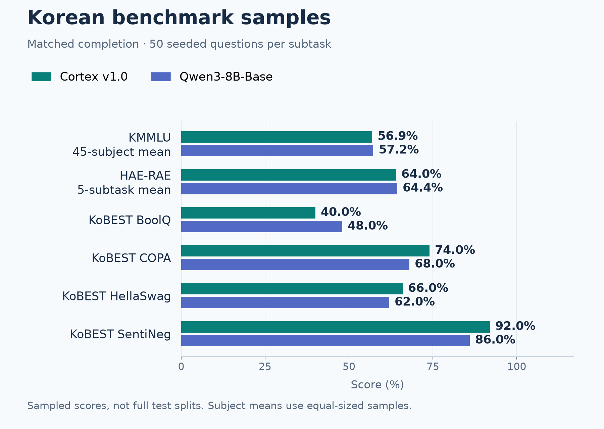
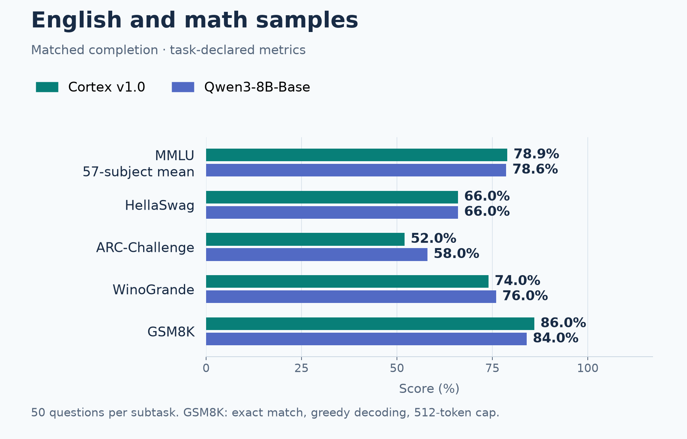
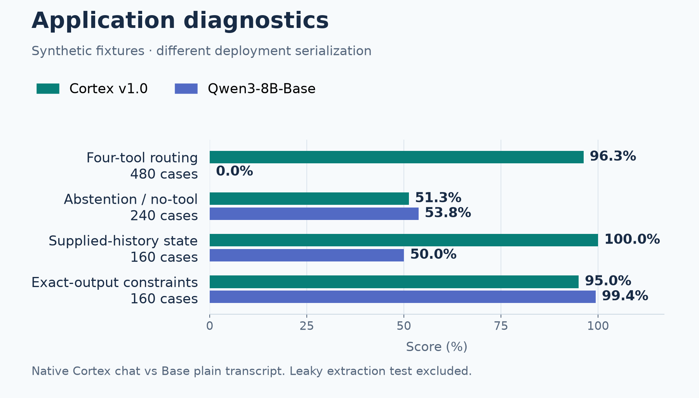
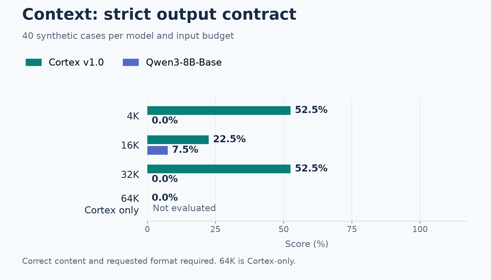
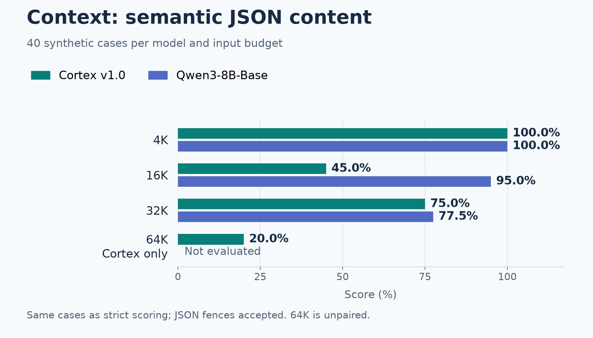

EVALUATED RELEASE
Cortex 8B v1.0
Korean–English · instruction and tool tuning
KEURAL CORTEX · V1.0 RELEASE EVALUATION
Qwen3-8B-Base baseline · BF16 · completed November 10, 2026
FINAL RESULTS · INTERACTIVE COMPARISON
Same 0–100% scale. Missing and unpaired scores are never treated as zero.
Row counts are descriptive, not an overall ranking. Metrics differ across tasks; differences are percentage points, not significance tests. Strict and semantic fixture scores use the same cases.
No matching results. Try a different category or score view.





Matched standard completion and separately labeled deployment fixtures.
EVALUATED RELEASE
Korean–English · instruction and tool tuning
PRETRAINED BASELINE
Original pretrained baseline
Every completed standard subtask and synthetic diagnostic, including failures and excluded checks.
| Benchmark / subtask | Cortex v1.0 | Qwen3-8B-Base | Difference | Coverage / metric |
|---|
Sampled benchmarks and synthetic fixtures are different evidence.
Same frozen samples and prompts. 45 KMMLU subjects, 57 MMLU subjects and other declared tasks. 50 questions per leaf task, not full official test splits.
Cortex native chat vs Base plain transcript. Same request, examples and schema content; explicitly different serialization. Strict and semantic outputs reported separately.
Template variants are correlated. Training overlap is not fully ruled out. Extraction has answer leakage. 64K is Cortex-only; no baseline win/loss is inferred.
Historical job output saved with the completed run. No live Spark connection.
Loading archived log…View full log and raw records on GitHub
Files are hosted with this site or preserved in the public repository.